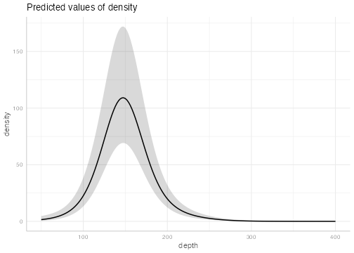
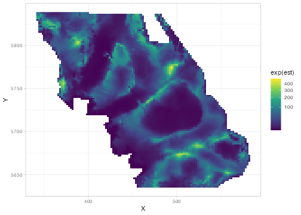
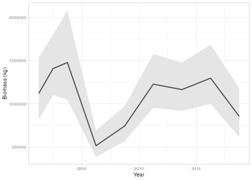
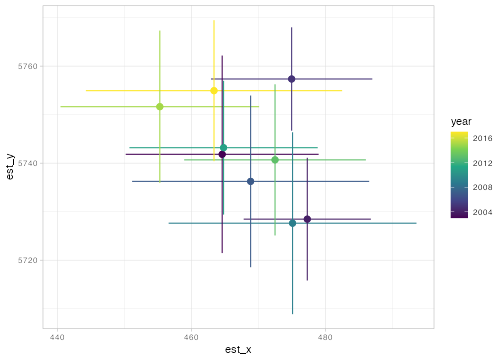
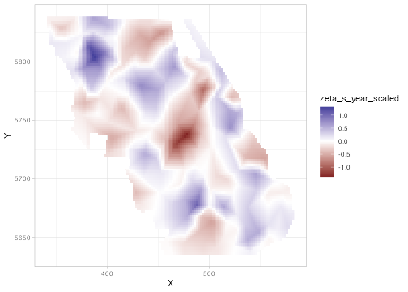
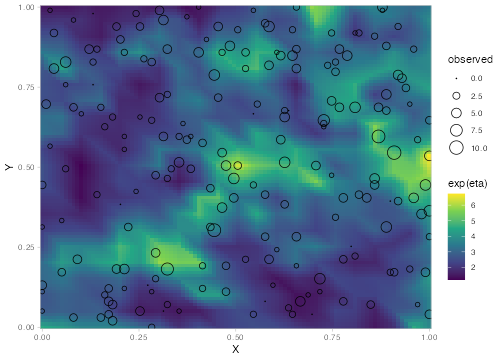
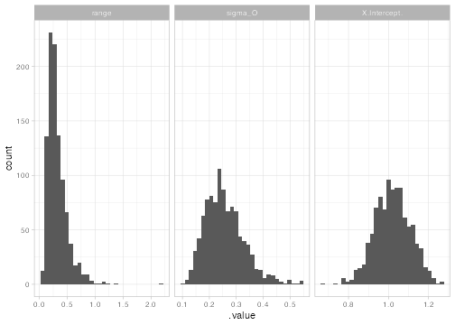
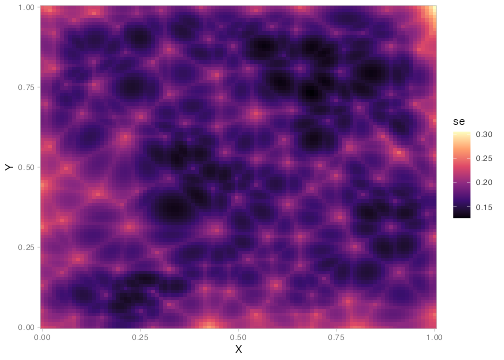
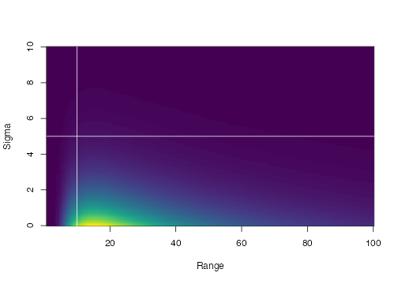
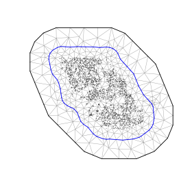

Spatial and spatiotemporal GLMMs with TMB
sdmTMB is an R package that fits spatial and spatiotemporal GLMMs (generalized linear mixed effects models) using Template Model Builder (TMB via RTMB), fmesher, and Gaussian Markov random fields. It’s designed to feel familiar to users of glm(), lme4, mgcv, or glmmTMB. One common application is for species distribution models (SDMs), but it works for any data with spatial coordinates. See the documentation site and the published paper.
Table of contents
Installation
sdmTMB can be installed from CRAN:
install.packages("sdmTMB", dependencies = TRUE)We recommend the development version, which has the latest features and bug fixes. Prebuilt binaries (tracking main) are available from r-universe and do not require a C++ compiler:
install.packages(
"sdmTMB",
dependencies = TRUE,
repos = c("https://sdmtmb.r-universe.dev", "https://cloud.r-project.org")
)Alternatively, if you have a C++ compiler installed, you can build the development version from source:
# install.packages("pak")
pak::pak("sdmTMB/sdmTMB", dependencies = TRUE)There are some extra utilities in the sdmTMBextra package.
Speeding up large models (optional)
For large models, an optimized BLAS library (the linear algebra library R uses) can make sdmTMB models much faster, often around 8 times faster. Suggested installation instructions for Mac users or with OpenBLAS on a Mac, Linux users, Windows users, and Windows users without admin privileges. To check that it worked, start a new R session and run:
m <- 1e4; n <- 1e3; k <- 3e2
X <- matrix(rnorm(m*k), nrow=m); Y <- matrix(rnorm(n*k), ncol=n)
system.time(X %*% Y)The ‘elapsed’ time should be a fraction of a second (e.g., 0.03 s), not more than 1 second.
Overview
Many datasets are collected at known locations, such as survey samples, plots, transects, or monitoring stations. Observations close together in space (or time) tend to be more similar than observations far apart. Ignoring this can give overconfident estimates and poor predictions. sdmTMB fits generalized linear mixed effects models (GLMMs) that account for this by adding random fields: smooth, estimated surfaces that capture spatial (and spatiotemporal) patterns not explained by your covariates.
If you’ve used glm(), lme4, mgcv, or glmmTMB, the syntax will feel familiar. A common application is species distribution models (SDMs), hence the package name, but the models apply to any data with coordinates.
Under the hood, sdmTMB uses fmesher to build a triangular mesh and the SPDE approach to represent random fields efficiently. Models are written with RTMB and fit with Template Model Builder (TMB). Parameters are estimated by maximum marginal likelihood (via stats::nlminb()), with random effects integrated out using the Laplace approximation. Models can also be passed to Stan via tmbstan for Bayesian estimation.
What can sdmTMB do?
Model structure
- Spatial random fields, and spatiotemporal random fields that are independent each time step or that follow a random walk or autoregressive (AR1) process
- Areal models (CAR/SAR) for polygon or gridded data, as an alternative to the mesh-based approach
- Random intercepts and slopes with lme4-style syntax, e.g.,
(1 + x | group) - Smooth (non-linear) covariate effects with mgcv-style
s()terms - Breakpoint (“hockey-stick”) and logistic threshold covariate effects
- Time-varying coefficients that change over time as a random walk or AR1 process
- Spatially varying coefficients, where a covariate’s effect differs across space
- Non-local covariate effects, where a covariate affects the response at nearby locations (spatial diffusion) or later times (time lags)
- Anisotropy (spatial correlation that is stronger in some directions) and barriers to correlation (e.g., land in a marine model)
- Interpolation over missing time steps and forecasting into the future
Response distributions (families)
- Common families:
gaussian(),binomial(),poisson(),Gamma(),Beta(),lognormal(),student() - Families for overdispersed or zero-heavy data:
nbinom1(),nbinom2(),tweedie(),betabinomial(),gengamma(), mixture families for extreme events (e.g.,gamma_mix()), and truncated and censored families (e.g.,censored_poisson()for hook competition in longline surveys) -
ordbeta()for proportions that include exact 0s and 1s - Delta (hurdle) models that separately model presence and positive values, e.g.,
delta_gamma()anddelta_lognormal(), including Poisson-link delta models (type = "poisson-link") - Covariates on the dispersion parameter (
dispformula) - Experimental multi-family models that combine different data types (e.g., presence-absence and counts) in one model
After fitting
- Prediction on new data, with uncertainty
- Derived quantities such as area-weighted totals (e.g., abundance indices), center of gravity, area occupied, range edges, and weighted averages
- Residual checks and simulation from fitted models
- Cross-validation (including leave-future-out) and model comparison
- Priors (including custom priors) and Bayesian estimation with Stan
See ?sdmTMB and ?predict.sdmTMB for the most complete examples. Also see the articles on the documentation site and the published paper.
Getting help
For questions about how to use sdmTMB or interpret the models, please post on the discussion board. If you email a question, we are likely to respond on the discussion board with an anonymized version of your question (and without data) if we think it could be helpful to others. Please let us know if you don’t want us to do that.
For bugs or feature requests, please post in the issue tracker.
There have been several past sdmTMB workshops. Slides and exercises from the latest workshop are here. Recordings from an older workshop are also available.
Citation
To cite sdmTMB in publications, please use:
citation("sdmTMB")Anderson, S.C., E.J. Ward, P.A. English, L.A.K. Barnett, J.T. Thorson. 2025. sdmTMB: an R package for fast, flexible, and user-friendly generalized linear mixed effects models with spatial and spatiotemporal random fields. Journal of Statistical Software. 115(2):1–46. https://doi.org/10.18637/jss.v115.i02.
A list of known publications that use sdmTMB can be found here. Please use the above citation so we can track publications.
Basic use
An sdmTMB model needs a data frame with a column for the response, columns for any predictors, and columns for spatial coordinates. The coordinates should be in a projected coordinate system where distances are the same everywhere, such as UTMs in km, rather than latitude and longitude. You can convert coordinates with sf::st_transform() or add_utm_columns().
Here, we fit a model to Pacific cod (Gadus macrocephalus) survey data from Queen Charlotte Sound, British Columbia, Canada. The data frame pcod is built into the package. It has a column year for the survey year, density for fish density at each sampling location, present for whether density > 0, depth for depth in meters, and coordinates X and Y (UTMs in km).
#> # A tibble: 3 × 6
#> year density present depth X Y
#> <int> <dbl> <dbl> <dbl> <dbl> <dbl>
#> 1 2003 113. 1 201 446. 5793.
#> 2 2003 41.7 1 212 446. 5800.
#> 3 2003 0 0 220 449. 5802.Make a mesh
First, we make a mesh: a network of triangles used to approximate the spatial random field.
cutoff is the minimum distance allowed between mesh vertices, in the units of X and Y (here, km). Smaller values make a finer mesh, which can capture finer spatial patterns but takes longer to fit. You can view the mesh with plot(mesh).
Fit a model
Our first model includes a smooth effect of depth, a spatial random field, and a Tweedie distribution, which handles continuous data with exact zeros (common for density or biomass data):
fit <- sdmTMB(
density ~ s(depth),
data = pcod,
mesh = mesh,
family = tweedie(link = "log"),
spatial = "on"
)Print the model fit:
fit
#> Spatial model fit by ML ['sdmTMB']
#> Formula: density ~ s(depth)
#> Mesh: mesh (isotropic covariance)
#> Data: pcod
#> Family: tweedie(link = 'log')
#>
#> Conditional model:
#> coef.est coef.se
#> (Intercept) 2.37 0.21
#> sdepth 0.62 2.53
#>
#> Smooth terms:
#> Std. Dev.
#> sd__s(depth) 13.93
#>
#> Dispersion parameter: 12.69
#> Tweedie p: 1.58
#> Matérn range: 16.39
#> Spatial SD: 1.86
#> ML criterion at convergence: 6402.136
#>
#> See ?tidy.sdmTMB to extract these values as a data frame.How to read this output:
-
sdepthandsd__s(depth)describe the depth smoother: its linear component and how wiggly it is. - The dispersion parameter (
phi) andTweedie pdescribe how variable the observations are around the mean. -
Matérn rangeis the distance (here, km) at which spatial correlation drops to about 0.13. Points farther apart than this are nearly independent. -
Spatial SD(sigma_O) is how much the spatial random field varies, i.e., how much spatial variation the covariates don’t explain. -
ML criterion at convergenceis the negative log likelihood that was minimized.
We can extract parameters as a data frame:
tidy(fit)
#> # A tibble: 2 × 5
#> term estimate std.error conf.low conf.high
#> <chr> <dbl> <dbl> <dbl> <dbl>
#> 1 (Intercept) 2.37 0.215 1.95 2.79
#> 2 sdepth 0.62 2.53 -4.34 5.58
tidy(fit, effects = "ran_pars")
#> # A tibble: 5 × 5
#> term estimate std.error conf.low conf.high
#> <chr> <dbl> <dbl> <dbl> <dbl>
#> 1 range 16.4 4.47 9.60 28.0
#> 2 phi 12.7 0.406 11.9 13.5
#> 3 sigma_O 1.86 0.218 1.48 2.34
#> 4 tweedie_p 1.58 0.00998 1.56 1.60
#> 5 sd__s(depth) 13.9 NA 7.54 25.7Check the model
Run some basic checks for convergence and estimation problems:
sanity(fit)
#> ✔ Non-linear minimizer suggests successful convergence
#> ✔ Hessian matrix is positive definite
#> ✔ No extreme or very small eigenvalues detected
#> ✔ No gradients with respect to fixed effects are >= 0.001
#> ✔ No fixed-effect standard errors are NA
#> ✔ No standard errors look unreasonably large
#> ✔ No sigma parameters are < 0.01
#> ✔ No sigma parameters are > 100
#> ✔ Range parameter doesn't look unreasonably largeCheck the residuals. If the model is consistent with the data, these should look approximately normally distributed:
See the article on residual checking for more options, including simulation-based residuals with DHARMa.
Plot covariate effects
Use the ggeffects package to plot the depth effect:

For models without smoothers, ggeffects::ggeffect() is a faster alternative. See the ggeffects article for more examples.
Predict
Next, we predict on a grid covering the survey area. The data frame qcs_grid (included in the package) has the coordinates and covariates at each grid cell:
p <- predict(fit, newdata = qcs_grid)
head(p)#> # A tibble: 3 × 7
#> X Y depth est est_non_rf est_rf omega_s
#> <dbl> <dbl> <dbl> <dbl> <dbl> <dbl> <dbl>
#> 1 456 5636 347. -3.06 -3.08 0.0172 0.0172
#> 2 458 5636 223. 2.03 1.99 0.0460 0.0460
#> 3 460 5636 204. 2.89 2.82 0.0747 0.0747est is the full prediction in link space (here, log). It’s the sum of two parts: est_non_rf, everything in the model except the random fields (the intercept and covariate effects, plus any random intercepts or other terms), and est_rf, the contribution of the random fields (here equal to omega_s, the spatial random field). We use exp() to convert predictions from the log scale to the density scale:
ggplot(p, aes(X, Y, fill = exp(est))) + geom_raster() +
scale_fill_viridis_c(trans = "sqrt")
Other families
For presence-absence data, we change the response and family:
A delta (hurdle) model fits two parts: one for whether the species is present and one for density where it is present.
fit <- sdmTMB(
density ~ s(depth),
data = pcod,
mesh = mesh,
family = delta_gamma(link1 = "logit", link2 = "log")
)See the articles on delta models and Poisson-link delta models.
Spatiotemporal models
To let the spatial pattern change over time, we specify the time column and a spatiotemporal structure. Here, "ar1" means each year’s spatial pattern is correlated with the previous year’s. The survey wasn’t conducted every year, so we use extra_time to include the unsampled years and keep the time steps evenly spaced:
Derived quantities: totals and center of gravity
A common goal is a time series of total abundance (or biomass) that accounts for where and when samples were taken (an “index”). We do this by predicting on a grid covering the whole area for each year and summing over the grid. Each grid cell is 2 x 2 km, so its area is 4 km²:
grid_yrs <- replicate_df(qcs_grid, "year", unique(pcod$year))
index <- get_index(fit_spatiotemporal, newdata = grid_yrs,
area = rep(4, nrow(grid_yrs)))
ggplot(index, aes(year, est)) +
geom_ribbon(aes(ymin = lwr, ymax = upr), fill = "grey90") +
geom_line(lwd = 1, colour = "grey30") +
labs(x = "Year", y = "Biomass (kg)")
Or the center of gravity, the average location of the population, which is useful for detecting shifts in distribution:
cog <- get_cog(fit_spatiotemporal, newdata = grid_yrs, format = "wide")
ggplot(cog, aes(est_x, est_y, colour = year)) +
geom_pointrange(aes(xmin = lwr_x, xmax = upr_x)) +
geom_pointrange(aes(ymin = lwr_y, ymax = upr_y)) +
scale_colour_viridis_c()
Other derived quantities include area occupied (get_eao()), range edges (get_range_edge()), and weighted averages of covariates such as depth or temperature (get_weighted_average()).
For more on these basic features, see the articles Intro to modeling with sdmTMB and Index standardization with sdmTMB.
More model types
Random intercepts and slopes
Use the same syntax as lme4 or glmmTMB ((1 | group), (1 + x | group), or (1 + x || group) for uncorrelated intercepts and slopes):
Time-varying coefficients
Time-varying coefficients let effects change gradually over time, for example if a relationship shifts with environmental change. Here we use time_varying_type = "rw0", a random walk that starts at zero. The coefficients in the main formula give the starting values and the random walk describes how they change from there. Alternatively, "ar1" lets coefficients fluctuate around their main formula values. See ?sdmTMB for details, including the default "rw".
A time-varying intercept (with extra_time filling in unsampled years so the time steps are evenly spaced):
fit <- sdmTMB(
density ~ s(depth, k = 5),
time_varying = ~ 1,
time_varying_type = "rw0",
extra_time = 2003:2017,
data = pcod, mesh = mesh,
time = "year",
family = tweedie(link = "log"),
silent = FALSE # see progress
)Covariate effects can vary over time too, e.g., time_varying = ~ 1 + depth_scaled. See the article Intro to modeling with sdmTMB for a time-varying depth effect with "ar1".
Spatially varying coefficients (SVC)
Spatially varying coefficients let a covariate’s effect differ across space. For example, a population might be increasing in some areas and decreasing in others.
Spatially varying effect of time:
pcod$year_scaled <- as.numeric(scale(pcod$year))
fit <- sdmTMB(
density ~ s(depth, k = 5) + year_scaled,
spatial_varying = ~ year_scaled,
data = pcod, mesh = mesh,
time = "year",
family = tweedie(link = "log"),
spatiotemporal = "off"
)The SVC covariate should be centered (mean of about 0) and also included in the main formula. Then the spatially varying field (zeta_s) represents local deviations from the average effect:
grid_yrs <- replicate_df(qcs_grid, "year", unique(pcod$year))
grid_yrs$year_scaled <- (grid_yrs$year - mean(pcod$year)) / sd(pcod$year)
p <- predict(fit, newdata = grid_yrs) |>
subset(year == 2011) # any year
ggplot(p, aes(X, Y, fill = zeta_s_year_scaled)) + geom_raster() +
scale_fill_gradient2()
See the articles on spatial trend models and SVC factor models for more details.
Breakpoint and threshold effects
Breakpoint effects increase linearly up to a threshold and then level off. Logistic effects follow an S-shaped curve:
fit <- sdmTMB(
present ~ 1 + breakpt(depth_scaled),
data = pcod, mesh = mesh,
family = binomial(link = "logit")
)
fit <- sdmTMB(
present ~ 1 + logistic(depth_scaled),
data = pcod, mesh = mesh,
family = binomial(link = "logit")
)See the article on threshold modeling for more details.
Covariates on dispersion
By default, the dispersion (how variable the observations are around the mean) is constant. dispformula lets it depend on covariates:
Areal models
For data summarized by polygons or grid cells, areal models with spatial_model = "car" or "sar" and a domain from make_areal_domain() use neighbouring units instead of a mesh. See the articles on polygon areal models and grid areal models.
Non-local covariates
Sometimes a covariate affects the response not just where it is measured but also nearby or later in time. nonlocal_formula = ~ diffusion(x) + time_lag(x) estimates the spatial and temporal scale of these effects. See the non-local covariates article.
Multi-family models (experimental)
Different rows of the data can use different families. For example, presence-absence data from one survey and biomass data from another can share spatial fields in a single model. Supply a named list to family and name the column that assigns rows to families with distribution_column. See the multi-family article.
Uncertainty, forecasting, and simulation
Simulating data from scratch
simulate_new() simulates data from a model you specify. This is useful for learning how the models work and for testing whether a model can recover known values:
predictor_dat <- expand.grid(
X = seq(0, 1, length.out = 100), Y = seq(0, 1, length.out = 100)
)
mesh <- make_mesh(predictor_dat, xy_cols = c("X", "Y"), cutoff = 0.05)
sim_dat <- simulate_new(
formula = ~ 1,
data = predictor_dat,
mesh = mesh,
family = poisson(link = "log"),
range = 0.3,
sigma_O = 0.4,
seed = 1,
B = 1 # B0 = intercept
)
head(sim_dat)
#> # A tibble: 6 × 7
#> X Y omega_s mu eta observed `(Intercept)`
#> <dbl> <dbl> <dbl> <dbl> <dbl> <int> <dbl>
#> 1 0 0 0.517 4.56 1.52 2 1
#> 2 0.0101 0 0.501 4.49 1.50 1 1
#> 3 0.0202 0 0.486 4.42 1.49 4 1
#> 4 0.0303 0 0.470 4.35 1.47 5 1
#> 5 0.0404 0 0.455 4.28 1.45 6 1
#> 6 0.0505 0 0.439 4.22 1.44 5 1
# sample 200 points for fitting:
set.seed(1)
sim_dat_obs <- sim_dat[sample(seq_len(nrow(sim_dat)), 200), ]
ggplot(sim_dat, aes(X, Y)) +
geom_raster(aes(fill = exp(eta))) + # mean without observation error
geom_point(aes(size = observed), data = sim_dat_obs, pch = 21) +
scale_fill_viridis_c() +
scale_size_area() +
coord_cartesian(expand = FALSE)
Fit to the simulated data:
mesh <- make_mesh(sim_dat_obs, xy_cols = c("X", "Y"), cutoff = 0.05)
fit <- sdmTMB(
observed ~ 1,
data = sim_dat_obs,
mesh = mesh,
family = poisson()
)See ?simulate_new for more details.
Simulating from a fitted model
simulate() generates new response data from a fitted model. Each column is one simulated dataset:
set.seed(1)
s <- simulate(fit, nsim = 500)
dim(s)
#> [1] 200 500
s[1:3, 1:4]
#> [,1] [,2] [,3] [,4]
#> [1,] 0 6 1 4
#> [2,] 0 3 1 1
#> [3,] 0 2 3 4Simulations are the basis for many model checks. See the article on residual checking, ?simulate.sdmTMB, and ?dharma_residuals for more details.
Sampling parameter uncertainty
We can draw samples of the parameters from their approximate joint distribution (a multivariate normal):
set.seed(1)
samps <- gather_sims(fit, nsim = 1000)
ggplot(samps, aes(.value)) + geom_histogram() +
facet_wrap(~.variable, scales = "free_x")
#> `stat_bin()` using `bins = 30`. Pick better value `binwidth`.
See ?gather_sims and ?get_index_sims for more details.
Uncertainty on spatial predictions
The fastest way to get uncertainty for each predicted location is to use the nsim argument in predict(), which returns one column per draw:
set.seed(1)
p <- predict(fit, newdata = predictor_dat, nsim = 500)
predictor_dat$se <- apply(p, 1, sd)
ggplot(predictor_dat, aes(X, Y, fill = se)) +
geom_raster() +
scale_fill_viridis_c(option = "A") +
coord_cartesian(expand = FALSE)
Set sample_fe = FALSE to hold the fixed effects at their estimates and only include uncertainty from the random effects.
Forecasting
To forecast, you can include future time steps with extra_time when fitting and predict on them. For longer forecasts, it’s faster to fit the model to the observed years only and use project() to simulate future random fields. For example, to forecast our spatiotemporal model 10 years ahead:
proj_grid <- replicate_df(qcs_grid, "year", 2003:2027)
out <- project(fit_spatiotemporal, newdata = proj_grid, nsim = 200)
proj_grid$est_mean <- apply(out$est, 1, mean) # mean of the simulationsproject() can include or exclude different sources of uncertainty (sample_fe, sample_historical_re, and sample_future_re). See the forecasting article and ?project.
Model comparison and cross-validation
Cross-validation
Cross-validation measures how well a model predicts data it wasn’t fit to. sdmTMB splits the data into folds, fits the model with each fold held out, and scores the predictions for the held-out data. If you set a future::plan(), the folds are fit in parallel:
mesh <- make_mesh(pcod, c("X", "Y"), cutoff = 10)
## Set parallel processing if desired:
# library(future)
# plan(multisession)
set.seed(123)
m_cv <- sdmTMB_cv(
density ~ s(depth, k = 5),
data = pcod, mesh = mesh,
family = tweedie(link = "log"), k_folds = 2
)
#> ℹ `sdmTMB_cv()` now scores held-out data with `predictive = "mle-mvn"` by default (previously `"mle-eb"`).
#> ℹ Previous values are returned in `sum_loglik_mle_eb` and `cv_loglik_mle_eb`.
#> ℹ Set `predictive` explicitly to silence this message.
#> Running fits with `future.apply()`.
#> Set a parallel `future::plan()` to use parallel processing.
#>
#> This message is displayed once per session.
# Sum of log likelihoods of left-out data (higher is better):
m_cv$sum_loglik
#> [1] -6546.733The held-out log likelihood accounts for uncertainty in the random fields, so results vary slightly with the random seed (nsim controls the number of draws). To compare models fit to the same folds, including a standard error of the difference, use loo::loo_compare() with loo::elpd(). See ?sdmTMB_cv and the cross-validation article.
Other model comparison tools
-
AIC()works as with other models fit by maximum likelihood. -
cAIC()calculates conditional AIC, which accounts for the flexibility of random effects and random fields. -
compare_deviance()calculates the proportion of deviance explained relative to a simpler model (a pseudo-R²).
You can also turn off the random fields (spatial = "off", spatiotemporal = "off") to compare with a model without them. With the random fields off, an sdmTMB model is equivalent to a GLM or GLMM.
Priors and Bayesian estimation
Priors
You can place priors (or penalties) on most parameters. For example, here we place a PC (penalized complexity) prior on the spatial range and SD, a normal prior on the intercept and depth effect, and a half-normal prior on the Tweedie dispersion parameter (phi):
fit <- sdmTMB(
density ~ depth_scaled,
data = pcod, mesh = mesh,
family = tweedie(),
priors = sdmTMBpriors(
matern_s = pc_matern(range_gt = 10, sigma_lt = 5),
b = normal(c(0, 0), c(10, 1)),
phi = halfnormal(0, 15)
)
)We can visualize the PC prior on the spatial range and SD:
plot_pc_matern(range_gt = 10, sigma_lt = 5)
For priors not covered by the built-in options, sdmTMBpriors(custom = ...) accepts a function that returns log densities for any parameters:
priors = sdmTMBpriors(
custom = function(par, theta) {
RTMB::dnorm(par$b_j[2], 0, 0.5, log = TRUE)
}
)See ?sdmTMBpriors, ?get_prior_parameters, and the custom priors article.
Bayesian MCMC sampling with Stan
A fitted model can be passed to the tmbstan package to sample from the posterior with Stan. See the Bayesian article.
Meshes
Using a custom fmesher mesh
make_mesh() covers most needs, but you can also build a mesh directly with fmesher, for example to follow the boundary of your study area:
bnd <- fmesher::fm_nonconvex_hull(cbind(pcod$X, pcod$Y), convex = -0.1)
mesh_fmesher <- fmesher::fm_mesh_2d(
boundary = bnd,
max.edge = c(25, 50)
)
mesh <- make_mesh(pcod, c("X", "Y"), mesh = mesh_fmesher)
plot(mesh)
Barrier meshes
A barrier mesh limits correlation across physical barriers, such as land for a marine species or water for a terrestrial one. See add_barrier_mesh() in sdmTMBextra.
Related software
sdmTMB is heavily inspired by the VAST and glmmTMB R packages.
The sdmTMBexperiments R package (not maintained by the sdmTMB developers) provides experimental helper functions for working with fitted sdmTMB models, including model comparison, mesh-resolution sensitivity, retrospective analyses, and index plotting.
The newer tinyVAST R package can fit many of the models that VAST and sdmTMB can, with an interface similar to sdmTMB. We generally recommend tinyVAST for multivariate models (e.g., several species at once) or for (dynamic) structural equation models with optional spatial and/or spatiotemporal components.
INLA and inlabru can fit many of the same models as sdmTMB (and more) in an approximate Bayesian framework.
mgcv can fit similar SPDE-based random field models with code included in Miller et al. (2019), but this is slower for large spatial datasets.
A table in the sdmTMB paper compares the functionality and speed of sdmTMB, VAST, INLA/inlabru, and mgcv, and the discussion suggests when you might choose one package over another.